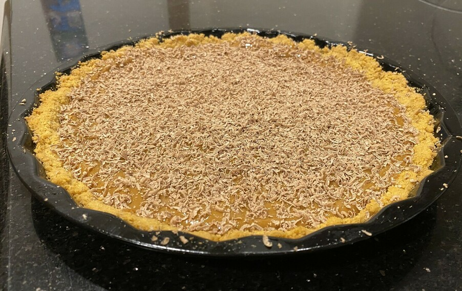

Caramel Tart
 Meat
Meat
This recipe comes from Lauren who enjoys a good caramel tart

Preheat oven to 180 degrees and grease tart pan
1 packetmilk arrowroot biscuits
Blend milk arrowroot biscuits into a fine crumb
somemargarine
Melt margarine and add to biscuit until it clumps togther
Place in oven until hard then place in fridge for an hour
1 cancaramel condensed milk
Whisk caramel condensed milk
somewhipped cream
Serve with whipped cream